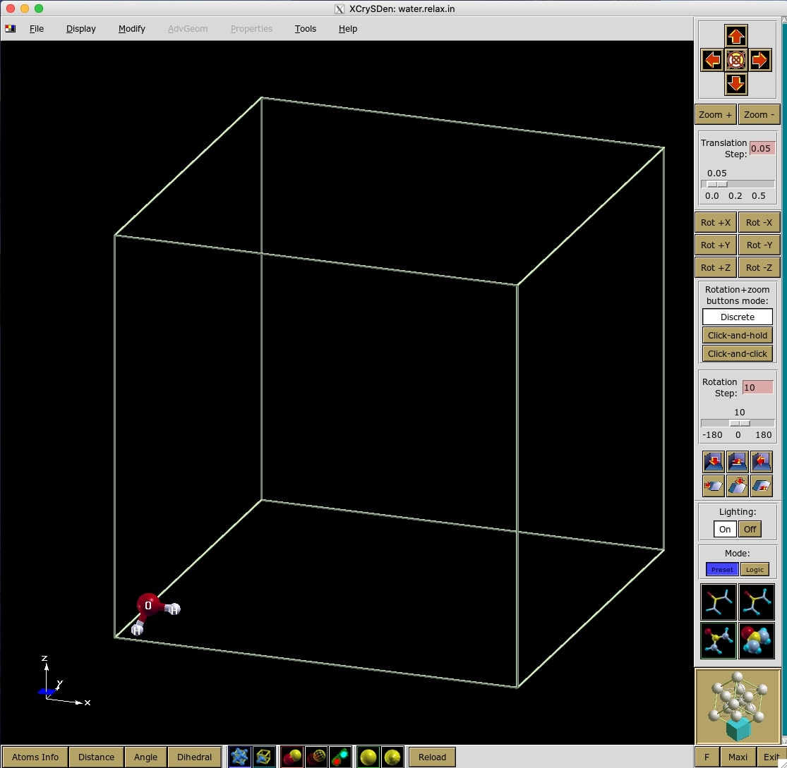

This is a tutorial to calculate Gibbs free energy of Water molecule. We will use Thermo_pw package. It is a driver of quantum-ESPRESSO (QE) routines. We can use it for several jobs like convergence tests, phonon frequencies, electronic bands, elastic constants, Quassi-harmonic Approximation (QHA) properties, etc. You can read the description and any required information from Thermo_pw main page.
This tutorial assumes:
You already have QE along with Thermo_pw instaled in your system.
You already have some basic skills for using QE in linux system.
You already have some basic knowledge about QHA and any related physical quantities.
There are two main steps of this tutorial. First, we relax the Water molecule using pw.x to get optimized geometry. Then we use this geometry to calculate the Gibbs free energy using thermo_pw.x.
You can access all input and psudopotential files
of this tutorial in my github page.
I provide a minimum keyword input file for relax calculation using pw.x. You can check pw.x input description to add other preferable keywords.
&CONTROL
calculation=’relax’,
pseudo_dir=’./’,
/
&SYSTEM
ibrav=0,
ntyp=2,
nat=3,
ecutwfc=50,
/
&ELECTRONS
/
&IONS
/
ATOMIC_SPECIES
O 15.999 O.pbe-n-kjpaw_psl.1.0.0.UPF
H 1.00784 H.pbe-kjpaw_psl.1.0.0.UPF
ATOMIC_POSITIONS (angstrom)
O 0.92370.93661.0272
H 0.64490.52150.1971
H 1.89160.91580.9856
K_POINTS gamma
CELL_PARAMETERS {angstrom}
15.00 0.00 0.00
0.00 15.00 0.00
0.00 0.00 15.00
Explanation of several important keywords are as follows.
calculation=’relax’, This specify our calculation type that is structural
optimization.
pseudo_dir=’./’, This specify that the pseudopotential files is in the same
directory with the input file.
ibrav=0, This is specify that we do not use any crystal structure, since our
system is an isolated molecule.
ntyp=2, nat=3, This specify that our system consist of 2 types of atoms (H and
O) with total 3 atoms.
ecutwfc=50, This specify that the kinetic energy cutoff used is 50 Ry. There is a
minimum value recommended inside the pseudopotential file of each element.
We should make sure that we use higher value than the recommended
one. Or, it is better if we optimize this parameter. We can optimize it
manually or automatically using Thermo_pw.x (you can found the tutorial
here).
O 15.999 O.pbe-n-kjpaw_psl.1.0.0.UPF This specify the symbol of the
element, its atomic mass, and its pseudopotential, respectively. They are
separated by at least one space. In this tutorial, we use projected augmented
wave (PAW) pseudopotentials along with PBE functional. This information can
be seen inside the pseudopotentials file.
ATOMIC_POSITIONS (angstrom) Several lines below this card specify the
geometry of our system. For visualisation purposes, make sure that every atoms
are in positive axes.
CELL_PARAMETERS {angstrom} There lines below this card specify the geometry of our cell,
that is a 15 Å
15 Å
15 Å box. This huge cell will limit the interaction between the periodic
systems.
I save the input file as water.relax.in. However, any name and extension is
OK. If you done everything right, you should can visualize the input file using
XCrySDen program (see Figure 1).

Run the input file using pw.x program: pw.x < water.relax.in > water.relax.out.
Once the calculation done (denoted by line: JOB DONE.) and the relaxation
converged (denoted by line: bfgs converged), we can extract the output
geometry of our system. Make sure to take the geometry of the very last cycle of
the calculations, that is the one written between Begin final coordinates and
End final coordinates, as follows.
Begin final coordinates
ATOMIC_POSITIONS (angstrom)
O 0.9242104056 0.9361038386 1.0261204507
H 0.6413561051 0.5206923851 0.1956086279
H 1.8946334893 0.9171037763 0.9881709214
End final coordinates
We use this coordinates to make the input file for thermo_pw.x which is explained in the next section.
We need three input files for this section: an input file for (1) pw.x and (2) ph.x,
as well as a file called (3) thermo_control. File (1) will be used for an scf
calculation for a fixed geometry obtained from the previous section. The result
will be used for phonon calculation using file (2). And finally, file (3) will control
the calculation for the Gibbs free energy. The details of each input file are as
follows.
&CONTROL
calculation=’scf’,
prefix=’water’,
pseudo_dir=’./’,
/
&SYSTEM
ibrav=0,
ntyp=2,
nat=3,
ecutwfc=50,
/
&ELECTRONS
/
&IONS
/
ATOMIC_SPECIES
O 15.999 O.pbe-n-kjpaw_psl.1.0.0.UPF
H 1.00784 H.pbe-kjpaw_psl.1.0.0.UPF
ATOMIC_POSITIONS (angstrom)
O 0.9242104056 0.9361038386 1.0261204507
H 0.6413561051 0.5206923851 0.1956086279
H 1.8946334893 0.9171037763 0.9881709214
K_POINTS AUTOMATIC
1 1 1 0 0 0
CELL_PARAMETERS {angstrom}
15.00 0.00 0.00
0.00 15.00 0.00
0.00 0.00 15.00
Most of the keyword is the same with the previous section. The changes are as follows.
calculation=’scf’, This specify the calculation only for a single SCF.
prefix=’water’, This gives identity for the calculation files. These files will be
called again in the ph.x calculation.
K_POINTS AUTOMATIC In this calculation we use a thicker k-point, that is
with
no offset, than in the previous section. This will give a more accurate result, but
with more computational cost, for ph.x calculation.
&inputph
prefix=’water’,
fildyn=’water.dyn.xml’,
ldisp=.TRUE.
nq1=1, nq2=1, nq3=1,
/
Explanation of each keyword are as follows.
prefix=’water’ This should be the same with the one in the pw.x input
file.
fildyn=’water.dyn.xml’, This specify the name of dynamical matrix
file.
ldisp=.TRUE., nq1=4, nq2=4, nq3=4, This specify the phonon calculation
for
q-points.
&INPUT_THERMO
what=’scf_disp’,
lgnuplot=.TRUE.,
find_ibrav=.TRUE.,
tmin=100,
tmax=1000,
deltat=100,
pressure=1.01325
/
Explanation of each keyword are as follows.
what=’scf_disp’, This specify the calculation for the harmonic thermodynamic
properties: vibrational energy, free energy, entropy, and constant strain heat
capacity.
lgnuplot=.TRUE., If you have a gnuplot installed in your computer, then this
keyword will trigger the gnuplot to produce a plot for the calculated
quantities.
find_ibrav=.TRUE., Since we use ibrav=0, in the pw.x input file, this
keyword is needed to build an internal geometry within thermo_pw.x
code.
tmin=100, tmax=1000, deltat=100, This specify the minimum, maximum,
and interval temperature, respectively.
pressure=1.01325 This specify the external pressure in kbar units. This value
is equal to 1 atm.
Once all files are ready, we can perform the calculation using thermo_pw.x:
thermo_pw.x -ni 1 < water.scf_disp.in > water.scf_disp.out.
This calculation is quite heavy so maybe it is necessary to use a parallel
calculation, for instance using mpirun.
The calculation results is writen in therm_files/output_therm.dat.g1:
# Zero point energy: 0.04113 Ry/cell, 53.99232 kJ/(N mol), 12.90447 kcal/(N mol)
# Temperature T in K,
# Total number of states is: 5.89128,
# Energy and free energy in Ry/cell,
# Entropy in Ry/cell/K,
# Heat capacity Cv in Ry/cell/K.
# Multiply by 13.6057 to have energies in eV/cell etc..
# Multiply by 13.6057 x 23060.55 = 313754.7 to have energies in cal/(N mol).
# Multiply by 13.6057 x 96485.33 = 1312749.8 to have energies in J/(N mol).
# N is the number of formula units per cell.
# For instance in silicon N=2. Divide by N to have energies in cal/mol etc.
# T energy free energy entropy Cv
0.10000000E+03 0.423834475852E-01 0.384923820814E-01 0.389106550379E-04 0.169694460863E-04
0.20000000E+03 0.441451558086E-01 0.339283606134E-01 0.510839759759E-04 0.179624885900E-04
0.30000000E+03 0.459593412568E-01 0.284288580445E-01 0.584349440410E-04 0.183336332123E-04
0.40000000E+03 0.478196971310E-01 0.223065581204E-01 0.637828475266E-04 0.189163404651E-04
0.50000000E+03 0.497489840803E-01 0.157066257241E-01 0.680847167125E-04 0.196894048491E-04
0.60000000E+03 0.517599403879E-01 0.871067386213E-02 0.717487775430E-04 0.205364022741E-04
0.70000000E+03 0.538572252200E-01 0.137121074625E-02 0.749800206768E-04 0.214133463037E-04
0.80000000E+03 0.560433797448E-01 -0.627492940703E-02 0.778978864398E-04 0.223132920112E-04
0.90000000E+03 0.583204529630E-01 -0.142004963852E-01 0.805788326091E-04 0.232300298536E-04
0.10000000E+04 0.606894948723E-01 -0.223845214090E-01 0.830740162812E-04 0.241499232497E-04
Note that the energies written in this file is the correction energies. That means,
we need to sum it with the total electronic energy obtain from pw.x calculation
to get for instance the total Gibbs free energy of the system. You can get the
total electronic energy from water.scf disp.out file in the ! total energy =
line.
That’s all. Don’t forget your diner.
This page is exported from LaTeX on Overleaf using make4ht developed by LianTze Lim